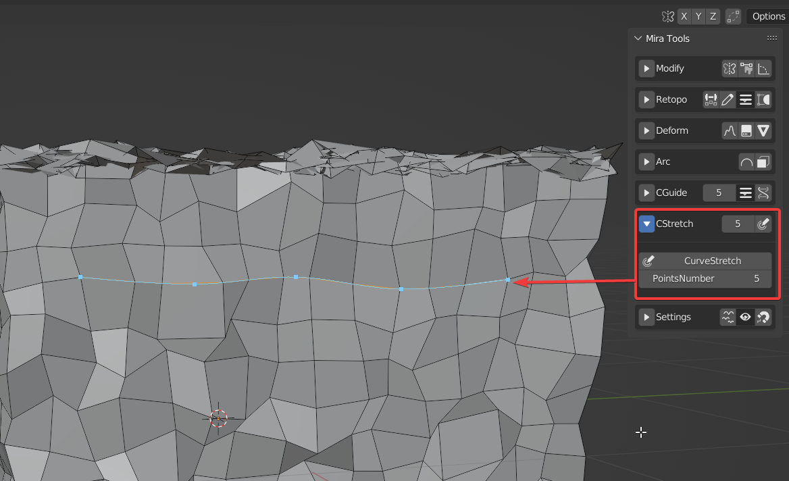

使用方式：
1. 進入頁面後，先到綠色 Code 按鈕點擊，選擇 download zip
2. 下載後解壓，進到 blender / addons / 2.8 / 資料夾中
3. 選到 mira_tools 資料夾，做成 .zip 壓縮檔。
4. 使用安裝外掛的方式安裝 mira_tools.zip。
非常好用的工具，是在買的 Blender Bros 教學裡看到的。
其中一個功能是
可以把選到的邊，加上一條可以己選定點數的曲線，如下圖。
選到藍色的點可以調整曲線來影響選到的那些邊的形狀，完成後按右鍵即可。

Created with the Personal Edition of HelpNDoc: Write eBooks for the Kindle